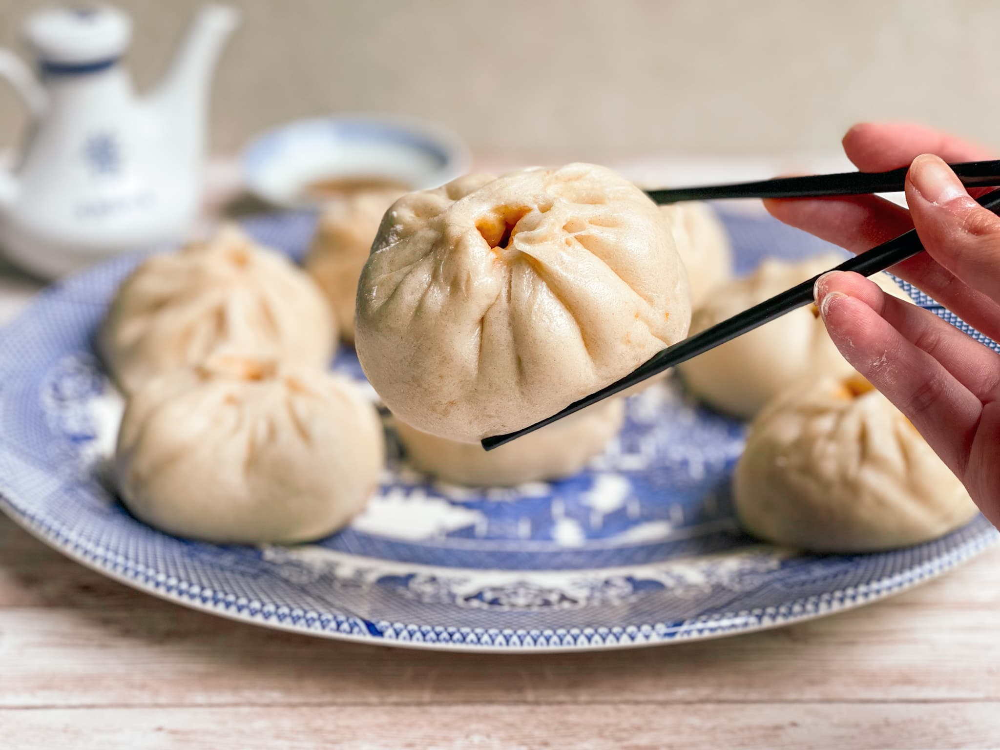

Pork Baozi

The best recipe to sweep you back to your danmei era.
Description of baozi
Why you should make it
Materials
- 2 Reasonably Sized Bowls
- Kitchen Scale
- 1 Average-Sized Mug
- Steamer (Preferrably Bamboo)
- Steamer Lining (Parchment Paper, Bamboo Leaves, etc.)
- Large Rollling Pin
- Small Rolling Pin
- Wok (Or Any Pan Large Enough for a Steamer)
- Stove
- Chopsticks
- Cutting Board
- Cleaver
- Tsp & Tbsp Measuring Spoons
Ingredients
Dough:
- 250g All-Purpose Flour (11% Protein)
- 125g Water
- 5g Sugar
- 2g Active Dry Yeast
Pork Filling:
- 180g Pork (~90% Lean, 10% Fat)
- 60g Water (Hot, Not Boiled)
- 1/2in Crushed Ginger
- 3 1in Sections of Leek
- 2 Star Anise
- 1/2 Black Cardamom Pod (Optional)
- 1tsp Fennel Seeds
- 1tsp Sichuan Peppercorns
- 1/4tsp Salt
- 1/4tsp Sugar
- 1/2tsp Cornstarch
- 1/8tsp White Pepper Powder
- 1/2tsp Shaoxing Wine
- 1tsp Toasted Sesame Oil
Method
Making the Dough:
- Stir and thoroughly dissolve sugar and yeast into water.
- Stir in water mixture bit by bit, aiming for dry parts (depending on age, some flour might need more water--dough should be crumbly but together, like a flaky pastry dough).
- Knead dough for ~8 minutes.
- Transfer dough to a smooth, flat surface and shape by taking the craggly side of the dough and pinching it closed, then forming it into a ball (like shaping bread).
- Put the dough in a large bowl and cover for 90 minutes (or until dought doubles in size)
Making the Filling
- First slice pork into a dice, then chop for ~3 minutes until it has a consistency somehwere between minced and ground.
- Add to hot, boiled water: ginger; leek; star anises; black cardamom pod; fennel seeds; sichuan peppercorns. Let water mixture rest for at least 30 minutes (or until water mixture is room-temperature).
- To the pork mince, add: salt; sugar; cornstarch; white pepper powder; light soy sauce; shaoxing wine.
- Strain now- room-temperature water mixture.
- Add strained water mixture in tbsps to pirk mince, stirring in ONE direction only in-between. Complete this step over ~5 minutes.
- Stir toasted sesame oil into pork mince.
- Chill pork filling in freezer for 30-60 minutes.
Putting it All Together
Rollilng Dough:
- Sprinkle flour over dough and gently punch out the air.
- Flour a smooth, flat surface (at least 30cm x 40cm in size). Set dough onto surface and lightly flour the top.
- Press dough down, then roll into a large sheet (~30cm x 40cm in length).
- Starting from the back (side closest to you), tightly roll the dough and cut into eight even sections.
- Press dough piece down to get a flat square, then fold each corner to the centre. Press the folds closed between your thumb and index finger, pinching up any excess. Pinch those folds at the very top and twist. Roll dough around slightly to shape just like before. Repeat for each dough piece.
Filling Dough:
- Sprinkle dough ball with flour and press flat.
- With a rolling pin, roll by first lightly rolling in, stopping just a bit away from the centre, then press and roll back out with force. Turn the dough disk in place and repeat until all the sides are thinner than the centre.
- In once of your dough disks, add 30g of pork filling. Then, pinch for the first pleast, hold the pleat with your thumb, and make the next pleat while lightly pushing the pork filling down. Continue around the baozi (trying for 18 pleats in total). At the end, pinch and twist excess from pleating up over towards the top of the baozi, pinching it together at the centre. Pat and shape into a ball.
- Repeat for all dough balls until all are filled.
Steaming Baozi:
- Place baozi in a steamer over parchment paper squares (or whatever lining you chose).
- Over a wok/pot of 30 centigrade water, nestle in the steaming rack of baozi.
- Spritz baozi with water.
- Proof baozi for 30 minutes (for smaller, denser baozi, proof for 15-20 minutes instead).
- Put wok/pot over max flame and get water up to a boil. Once steam comes out from the sides of the steamer, lower flame to medium and steam for 15 minutes.
- (Optional) When the baozi are done, if you can't eat them all right away, you can freeze them to be reheated with the steamer and they'll be almost as good. I recommend freezing them with the parchemnt paper for maximum convenience.